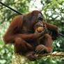

Orangutan
Critically Endangered
Estimated remaining: ~50,000 (all species combined)
Habitat
Tropical rainforests of Borneo and Sumatra. Orangutans build nests in trees and rarely descend to the ground.
Threats
- Deforestation for palm oil plantations
- Illegal pet trade and poaching
- Forest fires and habitat fragmentation
Conservation efforts
Rehabilitation centers, anti-poaching patrols, forest restoration, and ecotourism programs. Protected under CITES and national laws in Indonesia and Malaysia.